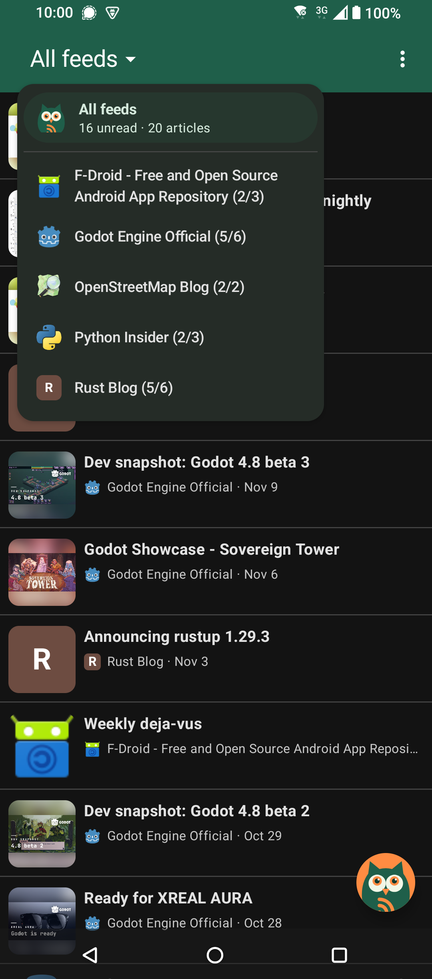
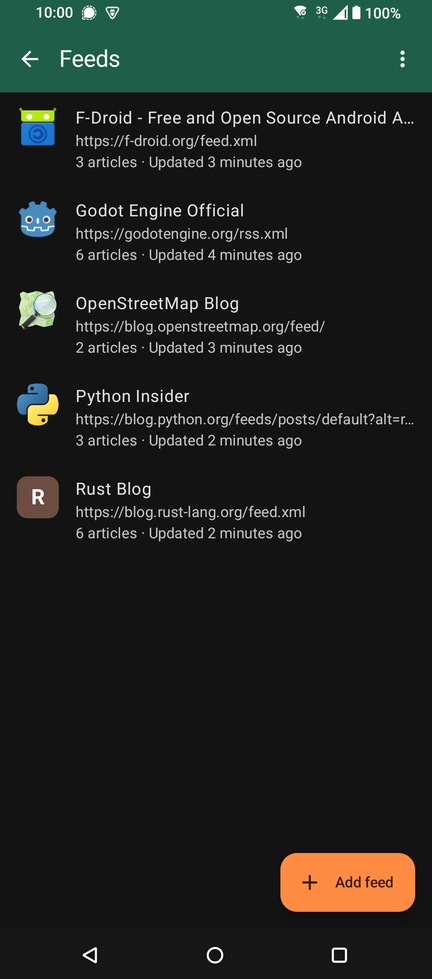
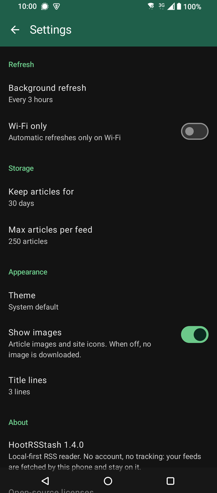
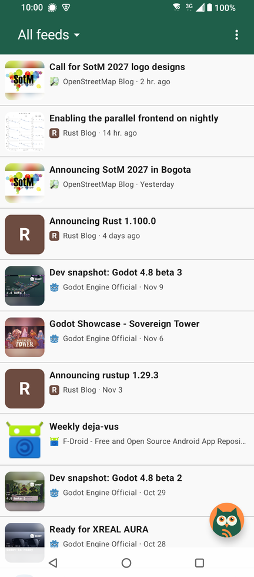

- One clean listAll your feeds in one list, newest first, with images and site icons. Filter by feed in one tap.
- Private by designNo account, no analytics, no ads. Nothing leaves your phone except the requests to the feeds you follow.
- Easy to addType a site address or share a page from your browser: the app finds the feed.
- Light on your phoneBackground refresh every few hours, Wi-Fi only if you like, old articles cleaned up automatically.
Add your feeds
Open the menu ⋮ → Feeds, then tap Add feed. You can type:
- a website address, for example
blog.rust-lang.org: the app looks for the site's feed. If the site offers several (articles, comments…), it lets you choose; - or a feed address directly, for example
https://f-droid.org/feed.xml.
From your browser, you can also use Share → HootRSStash (Add feed) on any page: the Add feed dialog opens with the page's address.
Coming from another reader? Use ⋮ → Import OPML on the Feeds screen. Export OPML saves your list to a file.
HootRSStash only uses secure (https://) addresses. Typing https:// is optional; sites that only offer plain http:// can't be added.
Read

- Mark as read / unread: long-press an article. Opening an article marks it as read.
- Undo: after marking articles as read, an Undo button stays at the bottom left for a few seconds.
- Search: ⋮ → Search finds articles by title (accents don't matter).
- Image preview: press and hold a thumbnail to see the image larger.
Refresh
Pull the list down to refresh now. The app also refreshes in the background (every 3 hours by default), and opening the app refreshes it too. When new articles arrive, a “Hoot! N new articles” banner tells you how many.
If a feed can't be refreshed, the Feeds screen shows a red warning badge on its icon, with the reason below (site not reachable, not a feed, error code from the site…).
Settings



- Background refresh · Wi-Fi only
- How often feeds are refreshed in the background, and whether to wait for Wi-Fi.
- Keep articles for · Max articles per feed
- Older articles are removed automatically (30 days and 250 per feed by default) so the app stays small.
- Theme
- System default, Light, Dark or Black.
- Show images
- When off, no image is downloaded: the list shows text and letter icons only.
- Title lines
- How many lines of each title the list shows.
Questions
- Does it sync between devices?
- No. Everything stays on the phone. Use Export OPML / Import OPML to move your feed list.
- Where is my data?
- On your phone only. See the privacy policy for details, including Android's own backup.
- Does it show full articles?
- Articles open in your default browser, on the publisher's site.
- A site doesn't work.
- Check that it offers an RSS or Atom feed over https. If it does and still fails, open an issue.